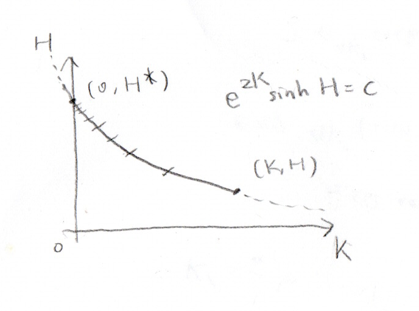

\[
\def\Gammaf{\varGamma}
\def\i{i}
\def\e{e}
\]
[4] $\,1\,$次元イジング模型のくりこみ群
分配関数 $Z=\Tr \e^{-\beta\hat{H}}$ における Trace を全て同時にとることは一般には困難である。そのようなときでも、一部の Trace を先に行い、その影響をハミルトニアンのパラメーターに「くりこむ」ことで表現できる場合がある。このようなくりこみ変換は（半）群をなし、くりこみ群と呼ばれる。
ここでは$\,1\,$次元 Ising 模型を例に考える。$\beta$ をかけ、ハミルトニアン（ここではエネルギー固有値）を無次元化し、次のように表わす。
\begin{align}
\tilde{E}_N\coloneqq \beta E(J,h)=-K\sum_{i=1}^N\sigma_i\sigma_{i+1}-\dfrac{H}{2}\sum_{i=1}^N(\sigma_i+\sigma_{i+1}).
\end{align}
ここで $K\coloneqq \beta J > 0,\ H\coloneqq \beta h$ であり、周期的境界条件 $\sigma_{N+1}\equiv\sigma_1$ を課す。
\begin{align}
(\text{\eqref{eq:threespin}の左辺})&=\exp\qty[\qty(K+\dfrac{H}{2})(\sigma_1+\sigma_3)+H]+\exp\qty[\qty(-K+\dfrac{H}{2})(\sigma_1+\sigma_3)-H]\\
&=2\exp\qty[\dfrac{H}{2}(\sigma_1+\sigma_3)]\cosh\qty[K(\sigma_1+\sigma_3)+H]
\end{align}
これが\eqref{eq:threespin}の右辺に等しいとする。$\sigma_1,\sigma_3\in\qty{+1,-1}$ より
\begin{align}
(\sigma_1,\sigma_3)&=(1,1)\quad\colon& 2\e^H\cosh(2K+H)&=A\exp(K'+H')\label{eq:akhfirst}\\
(\sigma_1,\sigma_3)&=(1,-1),(-1,1)\quad\colon& 2\cosh H&=A\exp(-K')\label{eq:akhsecond}\\
(\sigma_1,\sigma_3)&=(-1,-1)\quad\colon& 2\e^{-H}\cosh(-2K+H)&=A\exp(K'-H')\label{eq:akhthird}
\end{align}
\eqref{eq:akhsecond}より $A=2\exp K'\cosh H$。\eqref{eq:akhfirst} と \eqref{eq:akhthird} をかけて
\begin{align}
4\underbrace{\cosh(2K+H)\cosh(-2K+H)}_{\ds\dfrac{\cosh 2H+\cosh 4K}{2}}&=A^2\exp (2K')=4\exp (4K')\underbrace{\cosh^2 H}_{\dfrac{\cosh 2H+1}{2}}\\
\therefore \exp 4K'&=\dfrac{\cosh(2K+H)\cosh(-2K+H)}{\cosh^2 H}=\dfrac{\cosh 2H+\cosh 4K}{\cosh 2H+1}\label{eq:expk}\\
\therefore K'&=\dfrac{1}{4}\ln \dfrac{\cosh 2H+\cosh 4K}{\cosh 2H+1}\label{eq:kdash}
\end{align}
と $K'$ が定まる。\eqref{eq:akhsecond}より
\begin{align}
A=2\sqrt[4]{\cosh(2K+H)\cosh(-2K+H)\cosh^2 H}
\end{align}
と $A$ が求まる。\eqref{eq:akhfirst}より
\begin{align}
\exp H'&=\exp(H-2K')\dfrac{\cosh(2K+H)}{\cosh H}\\
&=e^H\sqrt{\dfrac{\cosh^2 H}{\cosh(2K+H)\cosh(-2K+H)}}\dfrac{\cosh(2K+H)}{\cosh H}\\
&=e^H\sqrt{\dfrac{\cosh(2K+H)}{\cosh(-2K+H)}}\\
\therefore H'&=H+\dfrac{1}{2}\ln\dfrac{\cosh(2K+H)}{\cosh(-2K+H)}\label{eq:nexth}
\end{align}
と $H'$ が求まる。このとき
\begin{align}
2\e^{2K'}\sinh H'&=\e^H\dfrac{\cosh (2K+H)}{\cosh H}-e^{-H+4K'}\dfrac{\cosh H}{\cosh (2K+H)}\\
&=\e^H\dfrac{\cosh (2K+H)}{\cosh H}-e^{-H}\dfrac{\cosh (-2K+H)}{\cosh H}\\
&=\dfrac{1}{2\cosh H}(e^{2K+2H}+e^{-2K}-e^{-2K}-e^{2K-2H})\\
&=e^{2K}\dfrac{\sinh 2H}{\cosh H}\\
&=2e^{2K}\sinh H
\end{align}
となり、$e^{2K}\sinh H=e^{2K'}\sinh H'$ が成り立つ。
\begin{align}
Z_N(K,H)&=\sum_{\sigma_1=\pm 1}\sum_{\sigma_2=\pm 1}\cdots \sum_{\sigma_N=\pm 1}\prod_{i=1}^{N}\exp\qty[K\sigma_i\sigma_{i+1}+\dfrac{H}{2}(\sigma_i+\sigma_{i+1})]\\
&=\prod_{i=1}^{N}\sum_{\sigma_i=\pm 1}\exp\qty[K\sigma_i\sigma_{i+1}+\dfrac{H}{2}(\sigma_i+\sigma_{i+1})]\\
&=\prod_{i\colon\mathrm{odd}}\sum_{\sigma_i=\pm 1}\sum_{\sigma_{i+1}=\pm 1}\exp\qty[K(\sigma_i\sigma_{i+1}+\sigma_{i+1}\sigma_{i+2})+\dfrac{H}{2}(\sigma_i+2\sigma_{i+1}+\sigma_{i+2})]\\
&=\prod_{i\colon\mathrm{odd}}\sum_{\sigma_i=\pm 1}A\exp\qty[K'\sigma_i\sigma_{i+2}+\dfrac{H'}{2}(\sigma_i+\sigma_{i+2})]\\
&=\sum_{\sigma_1=\pm 1}\sum_{\sigma_3=\pm 1}\cdots \sum_{\sigma_{2\lceil N/2\rceil-1}=\pm 1}\ \prod_{i\colon\mathrm{odd}}A\exp\qty[K'\sigma_i\sigma_{i+2}+\dfrac{H'}{2}(\sigma_i+\sigma_{i+2})]\\
&=A^{N/2}\sum_{\qty{\sigma_{2i-1}}}\exp[-\tilde{E}_{N/2}(K',H')]
\end{align}
となる。
- $K\gg 1, K\gg H$ の場合
\eqref{eq:expk} より
\begin{align}
e^{4K'}=\dfrac{\cosh 2H+\dfrac{e^{4K}+e^{-4K}}{2}}{\cosh 2H+1}\simeq \dfrac{e^{4K}}{2(\cosh 2H+1)} < e^{4K}
\end{align}
となり、$K$ は減少する。
- $K\ll 1$ の場合
\eqref{eq:expk} および $\sinh 4K\simeq 1+\dfrac{(4K)^2}{2}$ より
\begin{align}
\e^{4K'}&\simeq \dfrac{\cosh 2H+1+\dfrac{(4K)^2}{2}}{\cosh 2H+1}=1+\dfrac{16K^2}{2(\cosh 2H+1)} < 1+4K^2\simeq \e^{4K^2}\\
\therefore K' &< K^2 < K
\end{align}
となって減少し、また\eqref{eq:kdash} より $K'\ge 0$ なので $K$ は $0$ に漸近する。
また、\eqref{eq:nexth} より
\begin{align}
H'-H=\dfrac{1}{2}\ln\dfrac{\cosh(2K+H)}{\cosh(-2K+H)}
\end{align}
となり、単調増加することが分かる。$e^{2K}\sinh H=e^{2K'}\sinh H'$ が成り立つことから、$H$ は有界な範囲にとどまり、単調増加することと合わせて有限の定数に収束することが分かる。$(K,H)$ と $(0,H^\ast)$ の間にも成り立つことから
\begin{align}
e^{2K}\sinh H&=\sinh H^\ast\\
\therefore H^\ast &=\operatorname{arcsinh} (e^{2K}\sinh H)
\end{align}
と $H^\ast$ が求まる。

$(K,H)$ をくりこんで $(0,H^\ast)$ に達したときのスピン数を $N^\ast(=N/2^k,k\text{ はくりこんだ回数})$ とおく。そのときの分配関数 $Z_{N^\ast}(0,H^\ast)$ は
\begin{align}
Z_{N^\ast}(0,H^\ast)&=\sum_{\sigma_1=\pm 1}\cdots\sum_{\sigma_{N^\ast}=\pm 1}\prod_{i=1}^{N^\ast} \exp(H\sigma_i)\\
&=\prod_{i=1}^{N^\ast}2\cosh H^\ast\\
&=(2\cosh H^\ast)^{N^\ast}
\end{align}
と、相互作用の項が消える。ここから磁化を求めると
\begin{align}
m&=\dfrac{1}{N^\ast}\pdv{H^\ast}\ln Z_{N^\ast}\quad (\text{$H$ の中に $\beta$ が含まれている})\\
&=\pdv{H^\ast}\ln(2\cosh H^\ast)\\
&=\tanh H^\ast\\
&=\tanh \operatorname{arcsinh}(e^{2K}\sinh H)\\
&=\dfrac{e^{2K}\sinh H}{\sqrt{1+e^{4K}\sinh^2 H}}
\end{align}
となる。
参考文献